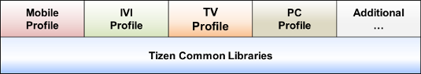

A Tizen Profile describes the requirements for a category of Tizen devices that have a common application execution environment.
Search "test/tct/web" at review.tizen.org
testkit related repositories at github.com/testkit
Most projects has 4 branches:
tct-alarm-tizen-tests/
+-- alarm
+-- support
+-- UnitTest-AlarmTest1
+-- resources
+-- webrunner
tct-2dtransforms-css3-tests/
+-- 2dtransforms
+-- csswg
+-- resources
+-- webrunner
tct-webgl-nonw3c-tests/
+-- resources
+-- webgl
+-- khronos
+-- resources
+-- support
+-- w3c
+-- webgl-py
+-- khronos
+-- webrunner
webapi-vehicleinfo-ivi-tests/
+-- resources
+-- vehicleinfo
+-- support
+-- webrunner
tct-capability-tests/
+-- capability
+-- support
+-- resources
+-- webrunner
+-- css
+-- images
+-- js
+-- thirdparty
+-- res
+-- css
+-- font
+-- images
+-- js
+-- media
+-- tests
+-- 2D3DAnimation
+-- Accelerometer
+-- Alarm
+-- ...
Here only care about these related to TCT.
Role and Responsibility
Documentation
Commit Message
Capitalized, short (50 chars or less) summary
More detailed explanatory text, if necessary. Wrap it to about 72
characters or so. In some contexts, the first line is treated as the
subject of an email and the rest of the text as the body. The blank
line separating the summary from the body is critical (unless you omit
the body entirely); tools like rebase can get confused if you run the
two together.
Impacted tests: new 0, update 5, delete 0
Unit test platform: Tizen Wearable <version>
Unit test result summary: pass 205, fail 0, block 0
See details at my post why commit message is so important.
{kind=link}
{kind=link}